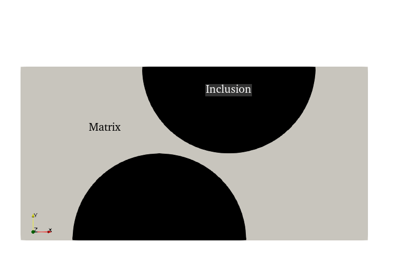
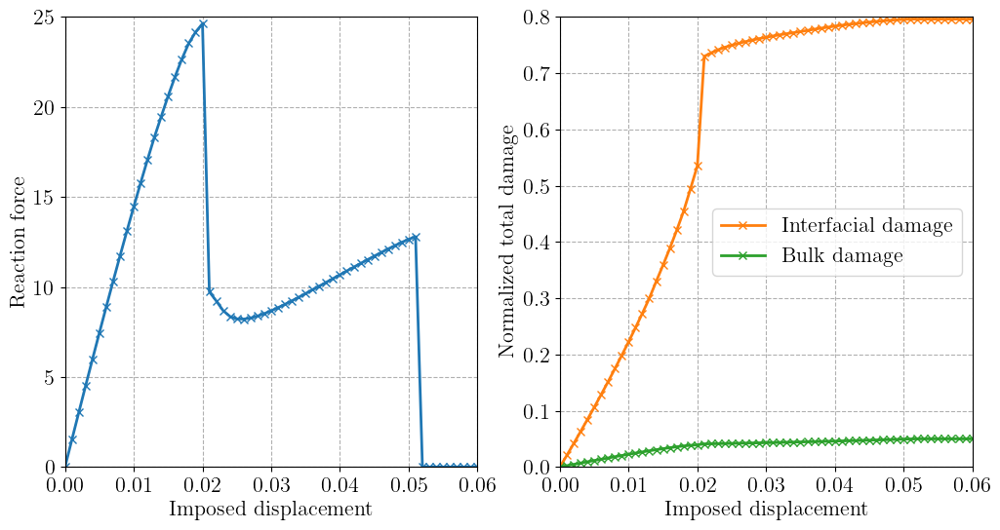

Cohesive zone modeling of debonding and bulk fracture #
Objectives
This tour demonstrates the formulation of a cohesive fracture model with FEniCSx. We adopt an intrinsic cohesive zone model (CZM) where cohesive elements are considered along all internal facets of the mesh. We will use for this purpose a Discontinuous Galerkin interpolation of the displacement field. The reader can also refer to [Hansbo and Salomonsson, 2015] for a related work. Other key aspects include:
Interface submeshes
Interpolation of expressions on facets
Fixed-point resolution strategy \(\newcommand{\bsig}{\boldsymbol{\sigma}} \newcommand{\beps}{\boldsymbol{\varepsilon}} \newcommand{\be}{\boldsymbol{e}} \newcommand{\bu}{\boldsymbol{u}} \newcommand{\bv}{\boldsymbol{v}} \newcommand{\bT}{\boldsymbol{T}} \newcommand{\bI}{\boldsymbol{I}} \newcommand{\T}{^\text{T}} \newcommand{\tr}{\operatorname{tr}} \newcommand{\CC}{\mathbb{C}} \newcommand{\RR}{\mathbb{R}} \newcommand{\dOm}{\,\text{d}\Omega} \newcommand{\dS}{\,\text{d}S} \newcommand{\Neumann}{{\partial \Omega_\text{N}}} \newcommand{\Dirichlet}{{\partial \Omega_\text{D}}} \renewcommand{\div}{\operatorname{div}} \newcommand{\bn}{\boldsymbol{n}} \newcommand{\bt}{\boldsymbol{t}} \newcommand{\jump}[1]{[\![#1]\!]} \newcommand{\Gc}{G_{\text{c}}} \newcommand{\sigc}{\sigma_{\text{c}}}\)
The problem that we consider is a heterogeneous elastic plate consisting of a matrix phase and stiffer elastic inclusions. Weak cohesive elements along the interface are considered while the remaining part of the mesh facets also consists of cohesive elements with stronger mechanical properties. Damage caused by normal and tangential opening induces debonding at the interface and, later, fracture in the bulk matrix phase.


Download sources
Cohesive zone modeling#
Traction-separation law#
Cohesive zone models are interface elements characterized by a discontinuous displacement and are able to transmit forces through the interface. The link between the interface opening (displacement jump) \(\jump{\bu}\) and the traction \(\bT\) is given by the choice of a specific constitutive law, usually known as a traction-separation law.
Among the many models available in the literature, we choose here one of the simplest ones, namely an exponential traction-separation law given by:
where \(\Gc\) is the interface fracture energy and \(\delta_0\) is another material parameter related to a critical opening. Finally, \(\delta\) is an effective opening displacement given by:
and where \(\beta\) is a coupling coefficient between the normal opening \(\jump{u_n} = \jump{\bu}\cdot\bn\) and the tangential opening \(\jump{u_t}=\jump{\bu}\cdot\bt\), \(\bn\) (resp. \(\bt\)) being the unit normal (resp. tangent) vector of the considered interface.
Alternatively, the traction-separation law can be written as a function of a damage variable \(d\) given by:
yielding:
The above law works as a nonlinear “spring” model with a secant stiffness given by \(\dfrac{\Gc}{\delta_0^2}(1-d)\). In addition, we should also account for irreversibility of damage evolution: damage cannot decrease, so that the stiffness cannot increase. In an unloading phase (i.e. \(\dot{\delta} < 0\)), damage remains constant and the interface acts as a linear elastic spring. As a result, expression (41) is modified to account for irreversibility as follows:
In a loading phase for which \(\dot{\delta}>0\), we have \(\dot{d}>0\) and the interface element behaves as a nonlinear softening elastic spring. For a purely normal opening \((\jump{u_t}=0)\) in a loading phase, we have:
which is maximum when \(\jump{u_n}=\delta_0\) with a value \(T_n(\delta_0) = \sigc = \dfrac{\Gc}{\delta_0}\exp(-1)\). \(\delta_0\) therefore characterizes the critical opening for which the maximum strength \(\sigc\) is reached. For \(\jump{u_n}\gg \delta_0\), the stiffness tends to vanish and the cohesive element no longer sustains any load. Finally, when integrating the traction-separation law for \(\jump{u_n}\) from 0 to \(+\infty\), we see that the total dissipated surface energy is:
which is then the fracture energy spent when completely opening the interface.
The following script illustrates the pure normal opening behavior of the exponential cohesive law along a few loading/unloading cycles.
from IPython.display import clear_output, HTML
import matplotlib.pyplot as plt
from matplotlib import animation
import numpy as np
delta_0 = 1.0
Gc = 1.0
sig_0 = Gc / delta_0 * np.exp(-1)
loading_cycles = [0, 2 * delta_0, 0, 4 * delta_0, 0, 8 * delta_0, 0]
loading_list = [np.array([0])]
for start, end in zip(loading_cycles[:-1], loading_cycles[1:]):
loading_list.append(np.linspace(start, end, 21)[1:])
loading = np.concatenate(loading_list)
d = 0
T = np.zeros_like(loading)
for i, u in enumerate(loading):
d = max(1 - np.exp(-abs(u) / delta_0), d)
T[i] = Gc / delta_0**2 * (1 - d) * u / sig_0
fig = plt.figure()
ax = fig.gca()
def draw_frame(i):
ax.clear()
ax.set_xlim(min(loading_cycles), max(loading_cycles))
ax.set_ylim(0, 1.2)
ax.set_xlabel(r"Normalized opening $[\![u]\!]/\delta_0$")
ax.set_ylabel(r"Normalized traction $T([\![u]\!])/\sigma_c$")
lines = [
ax.plot(loading[: i + 1], T[: i + 1], "-k")[0],
ax.plot(loading[i], T[i], "oC3")[0],
]
return lines
anim = animation.FuncAnimation(
fig, draw_frame, frames=len(loading), interval=50, blit=True, repeat_delay=5000
)
plt.close()
HTML(anim.to_html5_video())
import pyvista
import gmsh
from mpi4py import MPI
import ufl
import basix.ufl
from dolfinx import fem, io
import dolfinx.fem.petsc
from dolfinx.fem.petsc import LinearProblem
Warning
Note that we do not distinguish here the tensile from the compressive regime. In practice, an asymmetric formulation should be considered, for instance with a high stiffness in compression to approximate a unilateral contact behavior.
Variational formulation#
Now we consider a domain \(\Omega\) subject to imposed displacements on its Dirichlet boundary \(\Dirichlet\) and under given body forces \(\boldsymbol{f}\). In addition, the domain \(\Omega\) contains a set of interfaces \(\Gamma\) over which the displacement is discontinuous (jump \(\jump{\bu}\)) and for which the traction vector is given by the previous traction-separation law (42).
The weak form of equilibrium (virtual work principle) in the presence of discontinuities reads:
where \(\bT = \bsig\bn\) is the traction across \(\Gamma\) of unit normal \(\bn\) and \(V_0\) is the test function space (kinematically admissible perturbations).
Attention
For the above expression to be consistent, the definition of the jump \(\jump{\bu}\) should be:
where \(\bn\) is oriented from side \(\ominus\) to side \(\oplus\). Note that in UFL with n = FacetNormal(domain), this definition of the normal vector \(\bn\) therefore corresponds to the restriction on the \(\ominus\) side i.e. n("-") since n points outwards from a given cell.
Substituting the elastic constitutive relation and the traction-separation law, the resulting nonlinear problem is given by: Find \(\bu\in V\) such that:
where \(\bsig(\nabla^s \bu)\) is the linear elastic constitutive relation and where \(d\) is given by (43) as a nonlinear function of \(\jump{\bu}\).
Fixed-point resolution strategy#
The previous variational problem (44) is highly nonlinear. The Newton-Raphson method is often not robust in such softening situations, especially in the presence of unstable crack propagation phases. For this reason, we prefer here to resort to a fixed-point iteration scheme. For a given load step, we iterate between solving an elastic displacement problem with \(d\) being fixed to a previously known value \(d^{(i)}\), yielding the following linear problem:
Find \(\bu^{(i+1)}\in V\) such that:
The newly computed displacement \(\bu^{(i+1)}\) is then used to update the value of the interfacial damage field from (43) as follows:
where \(d_\text{prev}\) denotes the damage level reached at the end of the previous load step, which enforces an irreversible damage evolution.
These fixed-point iterations are repeated until \(\|d^{(i+1)}-d^{(i)}\|\leq \epsilon\).
Implementation#
Mesh and markers#
We define a function to create the mesh and other utility functions.
def create_matrix_inclusion_mesh(L, W, R, hsize):
comm = MPI.COMM_WORLD
gmsh.initialize()
gdim = 2
model_rank = 0
if comm.rank == model_rank:
gmsh.option.setNumber("General.Terminal", 0) # to disable meshing info
gmsh.model.add("Model")
gmsh.model.occ.addRectangle(0.0, 0.0, 0.0, L, W, tag=1)
gmsh.model.occ.addDisk(0.4, 0.0, 0.0, R, R, tag=2)
gmsh.model.occ.addDisk(0.6, W, 0.0, R, R, tag=3)
gmsh.model.occ.fragment([(gdim, 1)], [(gdim, 2), (gdim, 3)], removeObject=True)
gmsh.model.occ.synchronize()
gmsh.model.occ.remove([(gdim, 5), (gdim, 4)], recursive=True)
gmsh.model.occ.synchronize()
gmsh.option.setNumber("Mesh.CharacteristicLengthMin", hsize)
gmsh.option.setNumber("Mesh.CharacteristicLengthMax", hsize)
gmsh.model.addPhysicalGroup(gdim, [1], 1, name="Matrix")
gmsh.model.addPhysicalGroup(gdim, [2, 3], 2, name="Inclusions")
gmsh.model.addPhysicalGroup(gdim - 1, [3], 1, name="left")
gmsh.model.addPhysicalGroup(gdim - 1, [7], 2, name="right")
gmsh.model.addPhysicalGroup(gdim - 1, [1, 5], 3, name="interface")
gmsh.model.addPhysicalGroup(gdim - 1, [2, 9, 8, 4, 10, 6], 4, name="sides")
gmsh.model.mesh.generate(gdim)
partitioner = dolfinx.cpp.mesh.create_cell_partitioner(
dolfinx.mesh.GhostMode.shared_facet, 2
)
mesh_data = dolfinx.io.gmsh.model_to_mesh(
gmsh.model, MPI.COMM_WORLD, model_rank, gdim=gdim, partitioner=partitioner
)
gmsh.finalize()
return mesh_data
def create_piecewise_constant_field(
domain, cell_markers, property_dict, name=None, default_value=0
):
"""Create a piecewise constant field with different values per subdomain.
Parameters
----------
domain : Mesh
`dolfinx` mesh object
cell_markers : MeshTag
cell marker MeshTag
property_dict : dict
A dictionary mapping region tags to physical values {tag: value}
Returns
-------
A DG-0 function
"""
V0 = fem.functionspace(domain, ("DG", 0))
k = fem.Function(V0, name=name)
k.x.array[:] = default_value
for tag, value in property_dict.items():
cells = cell_markers.find(tag)
k.x.array[cells] = np.full_like(cells, value, dtype=np.float64)
return k
def plot_mesh(domain, marker, **kwargs):
plotter = pyvista.Plotter()
ugrid = pyvista.UnstructuredGrid(
*dolfinx.plot.vtk_mesh(domain, marker.dim, marker.indices)
)
ugrid.cell_data["Marker"] = marker.values
plotter.add_mesh(ugrid, show_edges=True, **kwargs)
plotter.show_axes()
plotter.view_xy()
plotter.show()
We first create the mesh and define the different tags for identifying physical domains and interfaces.
length = 1.0
width = 0.5
radius = 0.25
hsize = 0.02
mesh_data = create_matrix_inclusion_mesh(length, width, radius, hsize)
domain = mesh_data.mesh
cell_marker = mesh_data.cell_tags
facet_marker = mesh_data.facet_tags
INNER_FACET_TAG = 0 # tag of inner facets except interface
MATRIX_TAG = 1 # tag of matrix phase
INCL_TAG = 2 # tag of inclusion phase
INT_TAG = 3 # tag of interface
tdim = domain.topology.dim
fdim = tdim - 1
annotations = {
MATRIX_TAG: "Matrix",
INCL_TAG: "Inclusion",
}
plot_mesh(domain, cell_marker, annotations=annotations, cmap="plasma_r")
We recreate a facet MeshTag object from the one produced by gmsh to mark inner facets as INNER_FACET_TAG and plot it.
domain.topology.create_connectivity(fdim, tdim)
facet_map = domain.topology.index_map(fdim)
num_facets_local = facet_map.size_local + facet_map.num_ghosts
facet_values = np.full(num_facets_local, INNER_FACET_TAG, dtype=np.int32)
facet_values[facet_marker.indices] = facet_marker.values
facets = dolfinx.mesh.meshtags(
domain, fdim, np.arange(num_facets_local, dtype=np.int32), facet_values
)
annotations = {
1: "Left",
2: "Right",
INT_TAG: "Interface",
INNER_FACET_TAG: "Inner facets",
4: "Sides",
}
plot_mesh(domain, facets, annotations=annotations, line_width=2, cmap="plasma_r")
Submesh creation#
We now create a submesh using dolfinx.mesh.create_submesh. The submesh is of co-dimension[1] 1 and consists of the facets in \(\Gamma\), i.e. the facets of the interface \(\Gamma_\text{int}\) and the inner facets in \(\Gamma_\text{bulk}\). Besides the submesh interface_mesh, create_submesh returns an entity map interfaces_cell_map relating the facets of domain to the cells of interface_mesh, a map from the submesh vertices to the parent mesh vertices and a similar map for the geometry nodes (unused here).
internal_facets = np.concatenate([facets.find(m) for m in [INNER_FACET_TAG, INT_TAG]])
interface_mesh, interfaces_cell_map, interfaces_vertex_map, _ = (
dolfinx.mesh.create_submesh(domain, fdim, internal_facets)
)
We must also transfer the facet tags to the new interface_mesh to identify the interface and bulk regions of the submesh. This is done with dolfinx.mesh.transfer_meshtags_to_submesh, using the vertex and entity maps returned by create_submesh.
interfaces_facet_tags = dolfinx.mesh.transfer_meshtags_to_submesh(
facets, interface_mesh, interfaces_vertex_map, interfaces_cell_map
)
The entity map is essential when forms involve coefficients defined on a different mesh than the integration domain: it allows the assembler to find, for each facet of domain, the corresponding cell of interface_mesh. The entity map interfaces_cell_map, a dolfinx.mesh.EntityMap object, must therefore be passed to fem.form through the entity_maps argument whenever a form involves functions defined on the submesh, see also the FEniCS workshop on submeshes.
We now define the different integration measures. Note that we must choose a specific domain with which to associate each integration measure. We will use the full mesh domain, as it will be more convenient when dealing with multiple geometric dimensions. We check that the sum \(|\Gamma_\text{int}|+|\Gamma_\text{bulk}|\) is equal to the total interface measure \(|\Gamma|\) measured by integrating a cell measure over the submesh.
dx = ufl.Measure("dx", domain=domain)
ds = ufl.Measure("ds", domain=domain, subdomain_data=facets)
dS = ufl.Measure("dS", domain=domain, subdomain_data=facets)
dx_int = ufl.Measure("dx", domain=interface_mesh)
Gamma_int = fem.assemble_scalar(fem.form(1 * dS(INT_TAG)))
Gamma_bulk = fem.assemble_scalar(fem.form(1 * dS(INNER_FACET_TAG)))
Gamma = fem.assemble_scalar(fem.form(1 * dx_int))
print(f"Total interface length = {Gamma_int:.3f}")
print(f"Total inner facets length = {Gamma_bulk:.3f}")
print(f"Total interface measure = {Gamma:.3f} vs {Gamma_int + Gamma_bulk:.3f}")
Total interface length = 1.570
Total inner facets length = 86.602
Total interface measure = 88.172 vs 88.172
Weak form formulation#
We first define linear elastic material properties by creating two fields for Young’s modulus \(E\) and Poisson’s ratio \(\nu\), taking piecewise constant values in the matrix and inclusion phases. We refer to Create a piecewise constant field for spatially varying properties for more details. UFL functions for the strain and stress expressions are then defined.
E = create_piecewise_constant_field(
domain, cell_marker, {MATRIX_TAG: 3.09e3, INCL_TAG: 10e3}
)
nu = create_piecewise_constant_field(
domain, cell_marker, {MATRIX_TAG: 0.25, INCL_TAG: 0.4}
)
mu = E / (2.0 * (1.0 + nu))
lmbda = E * nu / ((1.0 + nu) * (1.0 - 2.0 * nu))
def epsilon(v):
return ufl.sym(ufl.grad(v))
def sigma(v):
return lmbda * ufl.tr(epsilon(v)) * ufl.Identity(tdim) + 2.0 * mu * epsilon(v)
We define the two material parameters representing the fracture energy \(\Gc\) and the critical stress \(\sigc\). Both fields are piecewise constant functions ("DG" of degree 0) defined on the interface mesh. Both parameters have smaller values on the interface, while facets in the bulk have stronger mechanical properties. We then define various functions such as (40), (41) and (42) which will serve for expressing the cohesive law.
Gc = create_piecewise_constant_field(
interface_mesh, interfaces_facet_tags, {INT_TAG: 0.5}, name="Gc", default_value=1.0
)
sig_max = create_piecewise_constant_field(
interface_mesh,
interfaces_facet_tags,
{INT_TAG: 50.0},
name="sigmax",
default_value=400.0,
)
delta_0 = Gc / sig_max / ufl.exp(1)
beta = fem.Constant(domain, 2.0)
def normal_opening(v, n):
return ufl.dot(v, n)
def tangential_opening(v, n):
return v - normal_opening(v, n) * n
def effective_opening(v, n):
return ufl.sqrt(normal_opening(v, n) ** 2 + beta**2 * tangential_opening(v, n) ** 2)
def T(opening, d):
K_int = ufl.avg(Gc / delta_0**2) * (1 - d)
return K_int * opening
Two function spaces are now defined. V refers to the displacement function space using a Discontinuous Galerkin ("DG") interpolation of degree 1.
We will also need to compute quantities which live only on the facets of the mesh e.g. the internal variables of the cohesive law (the damage d in the present case). The space V_int consists of a "DG" interpolation of degree 1 (piecewise affine on the facet and discontinuous at the vertices). This choice is made to simplify the visualization of facet fields. To enforce irreversibility of damage evolution, d_prev will store the value of interfacial damage at the previous converged increment. Finally, to test convergence of the damage field during the fixed-point iteration scheme, d_old will store the value of interfacial damage of the previous iteration.
Note that an alternative for V_int is to use a quadrature space on the facet mesh such as the space Q defined later. However, functions on Q can then only be visualized as point clouds, see this for example.
V = fem.functionspace(domain, ("DG", 1, (tdim,)))
u = fem.Function(V, name="Displacement")
v = ufl.TestFunction(V)
du = ufl.TrialFunction(V)
V_int = fem.functionspace(interface_mesh, ("DG", 1))
d = fem.Function(V_int, name="Interfacial_damage")
d_prev = fem.Function(V_int, name="Previous_interfacial_damage")
d_old = fem.Function(V_int, name="Interfacial_damage_old")
The variational forms are now defined. The weak form contains the current value of damage d defined as a function on the facet mesh. This function being fixed, the resulting problem is therefore linear. The corresponding bilinear and linear (zero in the present example) forms are compiled by passing the entity map, which allows integrating forms containing functions defined on the submesh.
The interface contribution a_interface to the bilinear form contains jump terms defined on all internal facets (bulk + interface) via the measure dS. Since we use an inner surface measure, all quantities must be restricted onto a facet. Although d lives on the facet mesh, we still need to restrict it in some way. We use here ufl.avg, although "+" or "-" would have also worked.
a_bulk = ufl.inner(sigma(du), epsilon(v)) * dx
a_interface = ufl.dot(T(ufl.jump(du), ufl.avg(d)), ufl.jump(v)) * dS
a = a_bulk + a_interface
f = fem.Constant(domain, (0.0, 0.0))
Fext = ufl.dot(f, v) * dx
a_compiled = fem.form(a, entity_maps=[interfaces_cell_map])
Fext_compiled = fem.form(Fext, entity_maps=[interfaces_cell_map])
residual_form = fem.form((d - d_old) ** 2 * dx_int)
Facet expressions interpolation#
In the load stepping process, the fixed-point procedure will iteratively update the damage field d with a new value computed from the current displacement estimate. We must therefore evaluate the nonlinear expression (43) at the interpolation points corresponding to the degrees of freedom of the V_int function space, namely the two vertices of each facet. For this purpose, we build a linear form whose assembled vector exactly contains the interpolated values, using a custom quadrature trick.
Note
A fem.Expression can also be evaluated on facets and involve functions defined on a submesh of co-dimension 1, through the entity_maps argument. However, such expressions are one-sided: they are evaluated from a single cell adjacent to the facet and therefore cannot involve restricted quantities such as ufl.jump(u). The quadrature trick described below handles such two-sided quantities naturally since it relies on an interior facet integral.
Suppose that we want to evaluate an expression e at certain points on facets. Assuming that \(Q\) is a quadrature function space defined on facets and \(x_g\), \(\omega_g\) are \(n\) quadrature integration points and weights defined on the reference element, the facet quadrature rule can be expressed as follows:
where \(F\) is a facet, \(|F|\) its area measure, \(\widehat{e}\) is a generic expression and \(q\) is a test function in \(Q\). Generalizing this quadrature over a set of facets, the resulting assembled vector therefore contains the values \(|F|\omega_g \widehat{e}(x_g)\) at the corresponding dofs. As a result, if we choose \(\widehat{e} = e/|F|\) and \(\omega_g=1\), the resulting assembled vector exactly contains the desired values \(e(x_g)\).
This strategy is implemented below. The damage expression d_expr to interpolate is first defined. Note that it is defined as the maximum between expression (41) and d_prev to ensure irreversibility. A custom basix quadrature element using unit weights and the interpolation points of V_int as quadrature points is defined on the interface mesh. The corresponding custom integration measure is also defined. Finally, facet_interp contains the compiled form discussed previously. Note that geometric quantities must be restricted on interior facets, even when they take the same value on both sides: we therefore use the facet area ufl.FacetArea(domain)("+").
n = ufl.FacetNormal(domain)
delta = effective_opening(ufl.jump(u), n("-"))
d_expr = ufl.max_value(ufl.avg(d_prev), 1 - ufl.exp(-delta / ufl.avg(delta_0)))
q_p = V_int.element.interpolation_points
weights = np.full(q_p.shape[0], 1.0, dtype=dolfinx.default_scalar_type)
q_el = basix.ufl.quadrature_element(
interface_mesh.basix_cell(), scheme="custom", points=q_p, weights=weights
)
Q = fem.functionspace(interface_mesh, q_el)
q_ = ufl.TestFunction(Q)
dS_custom = ufl.Measure(
"dS",
domain=domain,
metadata={
"quadrature_rule": "custom",
"quadrature_points": q_p,
"quadrature_weights": weights,
},
subdomain_data=facets,
)
facet_interp = fem.form(
1 / ufl.FacetArea(domain)("+") * d_expr * ufl.avg(q_) * dS_custom,
entity_maps=[interfaces_cell_map],
)
Dirichlet boundary conditions#
Here, we define the Dirichlet boundary conditions consisting of a fixed displacement on the left part and an imposed displacement \((t, 0)\) on the right boundary. Note that since we use a DG discretization of the displacement field, DG dofs do not live on the facets but are associated with cell interiors. As a result, they cannot be found using locate_dofs_topological and the facet marker. We must locate the dofs geometrically instead.
Note that an alternative could have been to employ a weak Nitsche imposition of the Dirichlet BCs which is very similar to a cohesive traction law at the boundary.
Finally, the imposed displacement constant Uimp is initialized with unit values. This will serve to define a unit virtual displacement field v_reac to be used for measuring the reaction force on the boundary in a consistent manner. We refer to Computing consistent reaction forces for more details.
Uimp = fem.Constant(domain, (1.0, 0.0))
left_dofs = fem.locate_dofs_geometrical(V, lambda x: np.isclose(x[0], 0.0))
right_dofs = fem.locate_dofs_geometrical(V, lambda x: np.isclose(x[0], length))
bcs = [
fem.dirichletbc(np.zeros((tdim,)), left_dofs, V),
fem.dirichletbc(Uimp, right_dofs, V),
]
v_reac = fem.Function(V)
fem.set_bc(v_reac.x.array, bcs)
virtual_work_form = fem.form(
ufl.action(ufl.action(a, u) - Fext, v_reac), entity_maps=[interfaces_cell_map]
)
The linear problem for the displacement at fixed damage is now defined outside the load-stepping loop.
problem = LinearProblem(
a_compiled,
Fext_compiled,
u=u,
bcs=bcs,
petsc_options={"ksp_type": "preonly", "pc_type": "lu"},
petsc_options_prefix="displacement_",
)
We will monitor the evolution of total damage over the structure by computing a normalized (or average) value of damage, separating the physical interface \(\Gamma_\text{int}\) contribution from that of the internal facets in the bulk matrix \(\Gamma_\text{bulk}\).
interface_damage = fem.form(ufl.avg(d) * dS(INT_TAG), entity_maps=[interfaces_cell_map])
bulk_damage = fem.form(
ufl.avg(d) * dS(INNER_FACET_TAG),
entity_maps=[interfaces_cell_map],
)
Load-stepping#
The load stepping loop is now started with progressively applied imposed displacement. For each load step, the inner fixed-point iteration loop is performed to first compute the new displacement and then update the value of damage by evaluating its expression on the different facets from assembling the facet_interp form. Convergence is checked by measuring the \(L^2\) difference between two consecutive values of the damage field.
At the end of each load step, the total resulting force on the right boundary is computed as well as normalized values of the total damage, distinguishing the interfacial from the bulk contribution. Finally, the d_prev variable is updated with new values to account for damage irreversibility.
Nincr = 60
loading = np.linspace(0, 0.06, Nincr + 1)
Niter_max = 200
tol = 1e-4
damage_results = [[0.0, 0.0]]
Force = [0.0]
iterations = [0]
out_file = io.VTKFile(MPI.COMM_WORLD, "results/czm.pvd", "w")
for i, t in enumerate(loading[1:]):
if MPI.COMM_WORLD.rank == 0:
print(f"Load step {i + 1}/{len(loading) - 1}")
Uimp.value[0] = t
nRes = 1.0
j = 0
while j < Niter_max:
# displacement problem resolution
problem.solve()
# interpolation of damage on facets
d.x.array[:] = fem.assemble_vector(facet_interp).array
# normalized residual for convergence check
nRes = np.sqrt((fem.assemble_scalar(residual_form))) / Gamma
d_old.x.array[:] = d.x.array[:]
j += 1
print(f" Iteration {j:2d} | Residual: {nRes}")
if nRes < tol:
break
else:
raise ValueError(
f"Fixed-point solver did not converge within {Niter_max} iterations"
)
iterations.append(j)
d_prev.x.array[:] = d.x.array[:]
Force.append(fem.assemble_scalar(virtual_work_form))
damage_results.append(
[fem.assemble_scalar(interface_damage), fem.assemble_scalar(bulk_damage)]
)
out_file.write_function(u, i)
out_file.write_function(d, i)
clear_output(wait=True)
out_file.close()
Load step 60/60
Iteration 1 | Residual: 5.084060128822264e-11
Force-displacement and damage evolution#
As showcased in the initial GIF animation, the matrix/inclusion interface first starts to open almost elastically, then a sudden drop in the force-displacement curve corresponds to the unstable debonding of a large portion of both interfaces. The remaining load-carrying part of the structure then continues to stretch until a sudden final fracture of the central region.
plt.figure(figsize=(12, 6))
plt.subplot(1, 2, 1)
plt.plot(loading, Force, "-x")
plt.xlabel("Imposed displacement")
plt.ylabel("Reaction force")
plt.subplot(1, 2, 2)
plt.plot(
loading,
np.asarray(damage_results)[:, 0] / Gamma_int,
"-xC1",
label="Interfacial damage",
)
plt.plot(
loading, np.asarray(damage_results)[:, 1] / Gamma_bulk, "-xC2", label="Bulk damage"
)
plt.legend()
plt.xlabel("Imposed displacement")
plt.ylabel("Normalized total damage")
plt.show()

References#
Peter Hansbo and Kent Salomonsson. A discontinuous galerkin method for cohesive zone modelling. Finite Elements in Analysis and Design, 102:1–6, 2015. doi:10.1016/j.finel.2015.04.008.